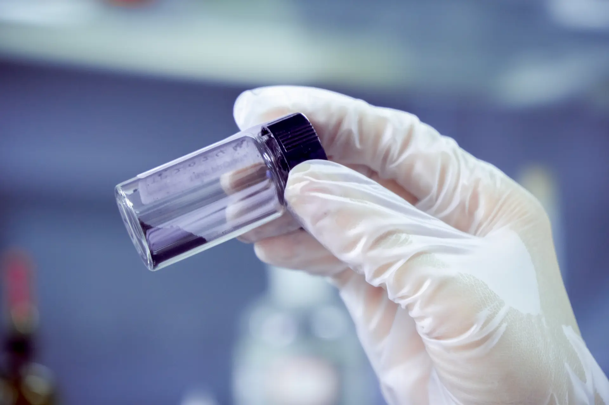

An industrial analysis of carbon feedstock purity standards for HPHT memorial diamond manufacturing. Extraction yield, contamination thresholds, graphitization protocols, and laboratory validation methods for B2B partners and memorial service providers.
The quality of a memorial diamond depends on variables that span the entire production pipeline: carbon source purity, graphitization completeness, HPHT synthesis parameters, and post-growth processing. Among these, carbon feedstock purity is the foundational variable — one that determines whether the subsequent manufacturing stages produce a gem-grade crystal or a rejected growth run. This article examines the technical specifications, analytical thresholds, and quality control protocols that define carbon purity requirements for industrial memorial diamond synthesis.
TL;DR — Quick Summary
BioGem Lab requires a minimum 99.95%+ carbon purity in graphitized feedstock before HPHT synthesis, with a standard target of 99.95%+ to prevent nitrogen-induced yellowing, sulfur lattice strain, and metallic inclusions. Each batch undergoes three analytical verification stages — elemental analysis, XRF metal screening, and Raman crystallography — before being approved for diamond growth.
Key Takeaway: BioGem Lab requires a minimum carbon purity of 99.95%+ in graphitized feedstock before HPHT synthesis. The standard operating target is 99.95%+, achieved through multi-stage purification, acid leaching, and high-temperature graphitization. Feedstock below threshold introduces lattice defects, color impurities, and inclusion risk that compromise final diamond quality.
Why Carbon Purity Controls Diamond Quality
HPHT diamond synthesis operates at conditions that expose every impurity in the carbon feedstock. At pressures of 5-6 GPa and temperatures of 1,300-1,600°C, trace contaminants do not simply dilute the crystal — they actively disrupt lattice formation. Nitrogen atoms substitute for carbon in the diamond lattice, producing yellow coloration. Sulfur and phosphorus create structural strain that manifests as inclusions or fractures. Metal contaminants from biological sources (iron, calcium, zinc) aggregate into metallic inclusions visible under 10x magnification.
The relationship between feedstock purity and final diamond quality is nonlinear. A feedstock at 98% carbon purity may produce diamonds with visible color defects and reduced clarity. At 99.95%+, the defect density drops significantly. At 99.95%+, the probability of contamination-induced defects falls below the threshold of visual detection under standard gemological grading conditions.
This is why carbon purification is not a secondary process step — it is the primary quality gate in memorial diamond manufacturing. Every gram of starting material that fails to meet purity specification is rejected before synthesis, preventing wasted machine time and protecting the partner's brand reputation.
Carbon Content in Biological Sources: Quantitative Analysis
Biological materials used in memorial diamond synthesis — primarily human hair, pet fur, and occasionally botanical samples — contain carbon in varying concentrations and chemical forms. Understanding these starting compositions is essential for predicting purification yield and designing appropriate process parameters.
Human Hair Composition
Human hair is approximately 30-40% carbon by mass, predominantly in the form of keratin protein. The remainder consists of oxygen (28%), nitrogen (15%), sulfur (5%), hydrogen (7%), and trace minerals (under 0.5%). The keratin structure is stabilized by disulfide bonds between cysteine residues, which is why sulfur content is significantly higher in hair than in most other biological carbon sources.
From a process engineering perspective, the 30-40% carbon content means that Purification and graphitization losses are significant. A 10-20 gram hair sample provides sufficient carbon for standard 0.5-1.0 carat diamonds under typical growth conditions.
Pet Fur and Keratin Variation
Pet fur is also keratin-based but exhibits compositional variation by species. Canine and feline fur typically contains 40-48% carbon, with higher lipid content than human hair. The lipid fraction introduces additional oxygen and hydrogen that must be removed during thermal oxidation. Fur also tends to have higher mineral content (calcium, magnesium) derived from sebaceous secretions and environmental exposure, which increases the burden on acid-washing stages.
Despite these differences, the fundamental extraction process remains identical. Thermal carbonization breaks down keratin at 400-600°C, releasing volatile components. The remaining carbon char is then acid-washed to remove inorganics, followed by high-temperature graphitization at 2,500-3,000°C to convert amorphous carbon into crystalline graphite suitable for HPHT synthesis.
Botanical and Alternative Sources
Botanical samples — flowers, leaves, or plant material — present a different compositional profile. Cellulose and lignin are the primary carbon carriers, with total carbon content ranging from 40-55% depending on the species. Botanical sources generally have lower nitrogen and sulfur content than hair or fur, but higher mineral content (potassium, calcium, magnesium) from soil uptake. The cellulose structure requires more aggressive thermal decomposition, and the ash content after carbonization is typically higher, necessitating extended acid washing.

Carbon sample inspection after purification: verifying consistency and color uniformity before graphitization.
The Purification Pipeline: From Raw Sample to Synthesis-Grade Graphite
Carbon purification for memorial diamond synthesis follows a standardized multi-stage pipeline. Each stage targets a specific class of contaminant, and the cumulative effect is the transformation of complex biological material into crystalline graphite with controlled purity.
Stage 1: Cleaning and Preparation
Biological samples arrive at the laboratory with surface contaminants: oils, environmental particulates, and packaging residues. The first stage removes these through ultrasonic cleaning in ethanol-water solution, followed by vacuum drying at 80°C. This step does not affect carbon purity but prevents external contaminants from interfering with subsequent chemical processes.
Stage 2: Thermal Carbonization
The cleaned sample is heated in a controlled-atmosphere furnace to 400-600°C under nitrogen flow. This thermal decomposition breaks down keratin, lipids, and other organic structures, releasing volatile components (water, ammonia, hydrogen sulfide, and hydrocarbon fragments) as off-gas. The solid residue is a carbon-rich char, typically black and porous, with carbon content increased to 70-85%.
Temperature control is critical during this stage. Below 400°C, decomposition is incomplete and residual organic structures interfere with subsequent purification. Above 700°C, the carbon char begins to sinter, reducing surface area and making acid washing less effective. The optimal carbonization window is 450-550°C with a 4-6 hour hold time.
Stage 3: Acid Washing and Inorganic Removal
The carbonized char contains inorganic minerals — calcium, magnesium, iron, sodium, and potassium compounds — that must be removed before graphitization. These are leached using sequential acid washing: first with dilute hydrochloric acid (HCl) to remove carbonates and basic oxides, then with dilute hydrofluoric acid (HF) to remove silicates and aluminosilicates, followed by distilled water rinses to neutral pH.
This stage is the most variable in duration and intensity. Samples with high mineral content (botanical sources, fur with environmental contamination) may require multiple acid cycles. Each cycle is followed by elemental screening via X-ray fluorescence to track contaminant reduction. The endpoint is reached when total metal content falls below 0.1% by mass.
Stage 4: High-Temperature Graphitization
The purified carbon char is transferred to a graphitization furnace and heated to 2,500-3,000°C in an inert argon atmosphere. At these temperatures, the amorphous carbon structure undergoes atomic rearrangement into layered graphite crystallites. This is not merely a phase change — it is a structural transformation that produces the crystalline carbon feedstock required for HPHT diamond synthesis.
Graphitization also performs a final purification function. Residual nitrogen, sulfur, and hydrogen are volatilized at these temperatures, further increasing carbon purity. The process typically requires 12-24 hours at temperature, with slow cooling to prevent thermal shock and cracking of the graphite product.
Stage 5: Quality Verification
Before release to the HPHT synthesis stage, every batch of graphitized carbon undergoes three analytical tests:
Combustion-infrared elemental analysis: Measures total carbon content to verify minimum 99.95%+ purity. This is the primary acceptance criterion.
X-ray fluorescence (XRF) spectroscopy: Screens for trace metal contamination (iron, calcium, zinc, sodium) at concentrations above 100 ppm. Any element exceeding threshold triggers batch rejection or reprocessing.
Raman spectroscopy: Confirms the crystalline graphite structure by detecting the characteristic G-band at 1,580 cm⁻¹ and the absence of D-band disorder peaks. Amorphous carbon produces a broad D-band that indicates incomplete graphitization.
Batches that pass all three tests are logged, assigned batch numbers, and transferred to the synthesis inventory. Failed batches are either reprocessed through additional graphitization or discarded, with the partner notified of material shortage if the starting sample was insufficient for recovery.
Request Carbon Purity Documentation
BioGem Lab provides batch-level purity reports to all B2B partners. Request our carbon extraction specification sheet and sample certificate template for your memorial diamond program.
Contaminant Profiles and Their Impact on Diamond Quality
Not all contaminants are equal. Each impurity element produces a distinct defect signature in the final diamond, and understanding these signatures is essential for quality prediction and troubleshooting.
Nitrogen: The Color Defect
Nitrogen is the most common contaminant in biological carbon and the most impactful on diamond appearance. In the diamond lattice, nitrogen substitutes for carbon atoms, creating a donor level in the bandgap that absorbs blue light and transmits yellow. This is the same mechanism that produces natural yellow diamonds. BioGem Lab does not offer fancy color diamonds; our standard production yields E–H near-colorless only.
In memorial diamond manufacturing, nitrogen content above 50 ppm typically produces visible yellow tinting. Above 200 ppm, the color becomes distinctly yellow. While nitrogen can be partially gettered by adding titanium or aluminum to the HPHT growth cell, the most effective control is at the feedstock level: reducing nitrogen in the carbon source to below 20 ppm before synthesis.
Sulfur and Phosphorus: Lattice Strain Defects
Sulfur and phosphorus are larger than carbon atoms and create lattice strain when incorporated into the diamond structure. This strain manifests as localized stress fields that scatter light, reducing clarity grades. At high concentrations, sulfur can also produce greenish coloration. The keratin-derived sulfur in hair and fur is particularly challenging because it is chemically bound within the protein structure and requires aggressive thermal oxidation for removal.
Metal Inclusions: Visual and Structural Defects
Iron, calcium, and magnesium residues from biological sources or environmental contamination form metallic and oxide inclusions that are visible as dark spots under magnification. These inclusions are not removable by post-growth processing and permanently reduce clarity. The presence of metallic inclusions is one of the primary reasons for rejecting diamonds below VS2 clarity grade in memorial diamond production.
Metal contamination is also the most reliably removed through acid washing, which is why the acid-washing stage receives particular attention in BioGem Lab's quality protocol. XRF screening after acid washing is mandatory before any batch proceeds to graphitization.
Starting Material Requirements: Mass, Volume, and Process Economics
The carbon purity requirement is directly linked to starting material mass. Insufficient material produces marginal carbon yield that falls below the 99.95%+ purity threshold or provides no buffer for process losses. BioGem Lab's material requirements are derived from process modeling, not arbitrary standards.
Minimum Material Requirements
The technical minimum for memorial diamond synthesis is 0.3 grams of hair or equivalent pet fur. At this mass, the expected graphite yield is 0.045-0.075 grams, which is sufficient for small diamonds (0.3-0.5 carat) under favorable growth conditions. However, this leaves no margin for process losses, quality control sampling, or growth failures.
BioGem Lab recommends 0.5 grams as the standard minimum. This provides approximately 0.075-0.125 grams of graphite, sufficient for 0.5-1.0 carat diamonds with process buffer. For larger carat weights (1.5-2.0 carat), 1.0-2.0 grams of starting material is recommended to ensure adequate carbon supply for the extended growth duration.
Process Economics and Yield Optimization
From a manufacturing economics perspective, carbon extraction efficiency directly impacts unit cost. Low-yield samples require more machine time per carat and higher labor input for handling and quality control. High-yield samples, in contrast, flow through the pipeline with minimal intervention and higher confidence in final quality.
This is why B2B partners are advised to communicate material requirements clearly to their customers. Pet cremation services that collect adequate fur samples (1.0+ grams) experience fewer delays, lower remake rates, and higher customer satisfaction than those that accept minimal samples. The material requirement is not a laboratory constraint — it is a quality assurance parameter that protects the partner's brand.
Industrial Comparison: BioGem Lab vs. Industry Standards
Carbon purity standards vary across the memorial diamond industry. Understanding where BioGem Lab's specifications sit relative to the broader market helps B2B partners evaluate supplier quality and communicate technical credibility to their customers.
Most commercial memorial diamond laboratories do not publish carbon purity specifications. The industry operates on an opaque quality model where the customer submits material and receives a diamond, with minimal transparency about intermediate processing stages. This opacity creates risk: partners cannot verify whether low-quality diamonds result from poor starting material or inadequate purification.
BioGem Lab's approach differs. Every batch is tracked, analyzed, and documented. Partners receive batch-level purity reports, and the 99.95%+ minimum is enforced regardless of starting material quantity. This transparency enables quality troubleshooting, supports partner education, and builds the trust infrastructure that white-label supply relationships require.
Partner Note: BioGem Lab's white-label program includes batch documentation for every memorial diamond. Partners can provide their customers with certificate packages that include carbon purity verification, growth parameters, and gemological grading — all under the partner's brand. Learn about the partnership program.
Quality Control Integration: From Carbon to Certificate
Carbon purity verification is the first stage in a continuous quality control chain that extends from sample intake to final certification. Each stage builds on the previous one, and the entire chain is documented in the batch record.
After carbon purity is verified, the graphite is loaded into the HPHT synthesis cell. During growth, temperature and pressure are logged continuously. After growth, the raw diamond is inspected for cracks, inclusions, and color uniformity. Only diamonds passing this inspection proceed to cutting. After cutting, the diamond is graded by an independent gemological laboratory (IGI or equivalent) for carat weight, color, clarity, and cut.
The result is a complete traceability chain: from the biological sample through purification, synthesis, cutting, and certification. For B2B partners, this traceability is a competitive advantage. It enables partners to answer customer questions with specific data, not generalities, and to differentiate their memorial diamond service from competitors who offer opaque processing.
Explore Manufacturing Capabilities
View BioGem Lab's full HPHT synthesis infrastructure, quality control protocols, and production capacity for white-label memorial diamond manufacturing.
Carbon purity in memorial diamond synthesis is not merely a technical specification — it is a quality philosophy that shapes every decision in the manufacturing pipeline. From material requirements through purification, graphitization, and final verification, the pursuit of high-purity carbon feedstock is the foundation on which gem-grade memorial diamonds are built.
For B2B partners, understanding these requirements enables better customer communication, more accurate timeline estimates, and higher-quality end products. The partner who can explain why 0.5 grams matters, why graphitization takes 7-10 days, and why purity verification is non-negotiable is the partner who earns customer trust and builds lasting business relationships.
BioGem Lab operates on the principle that quality is not inspected at the end — it is built at every stage. Carbon purity is where that building begins.
Frequently Asked Questions
What is the minimum carbon purity required for memorial diamond synthesis?
For industrial HPHT memorial diamond synthesis, the carbon feedstock must achieve a minimum purity of 99.95%+ after graphitization. Feedstock below this threshold introduces excessive nitrogen, sulfur, and metal contaminants that degrade crystal lattice quality, reduce clarity grades, and increase growth failure rates. BioGem Lab targets 99.95%+ carbon purity as standard operating procedure.
How much starting material is needed to reach sufficient carbon purity?
BioGem Lab recommends a minimum of 0.5 grams of hair or pet fur for standard 0.5-1.0 carat memorial diamonds. While 0.3 grams is technically the lower limit, the additional mass provides process buffer against purification losses, ensures consistent graphitization yield, and allows for quality control sampling without compromising the final synthesis batch.
Does biological carbon quality differ from industrial graphite sources?
After complete purification and graphitization, biological carbon is chemically and structurally identical to synthetic or natural graphite feedstock. The critical difference is the initial contamination profile: biological sources contain keratin, lipids, and trace minerals that must be removed through controlled oxidation and acid washing. Once purified, both sources perform identically in HPHT synthesis chambers.
What contaminants most commonly affect memorial diamond quality?
The primary contaminants of concern are nitrogen (causes yellow coloration), sulfur (induces lattice strain and inclusions), iron and calcium (metallic inclusions visible under magnification), and sodium (surface defects). Each is systematically removed through thermal oxidation, acid leaching, and high-temperature graphitization at BioGem Lab's purification facility.
How is carbon purity verified before HPHT synthesis?
Carbon purity is verified through a three-stage protocol: (1) elemental analysis via combustion-infrared detection for total carbon percentage, (2) X-ray fluorescence spectroscopy for trace metal screening, and (3) Raman spectroscopy to confirm crystalline graphite structure. Only samples passing all three stages proceed to HPHT synthesis.
Can carbon purity be improved after initial extraction?
Yes. Secondary purification cycles can elevate carbon purity from marginal levels to synthesis-grade standard. BioGem Lab employs repeated acid washing, thermal oxidation, and extended graphitization when initial yields are below threshold. However, excessive reprocessing increases cost and timeline, which is why sufficient starting material is recommended from the outset.
Related Articles
EducationalJune 2026
Biological Carbon Extraction: From Hair to Graphite
The industrial pipeline converting biological samples into purified graphite for HPHT memorial diamond synthesis.
BioGem Lab supplies white-label memorial diamond manufacturing to pet cremation services, veterinary clinics, and memorial businesses. Zero inventory. Full brand control. ~60-day turnaround.